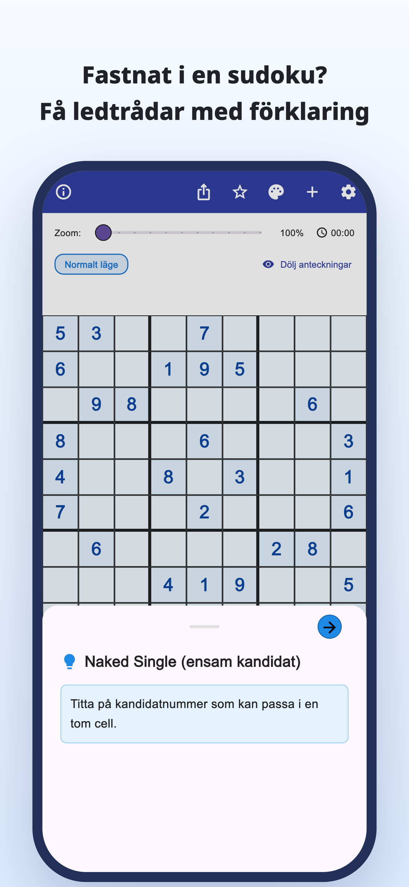
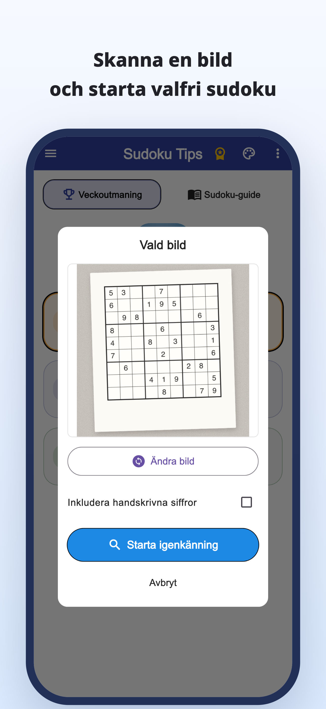
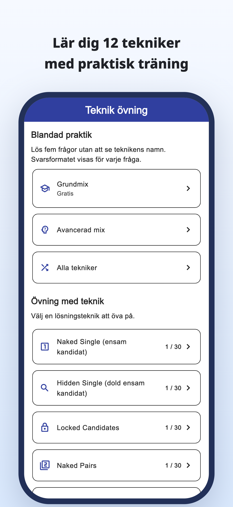
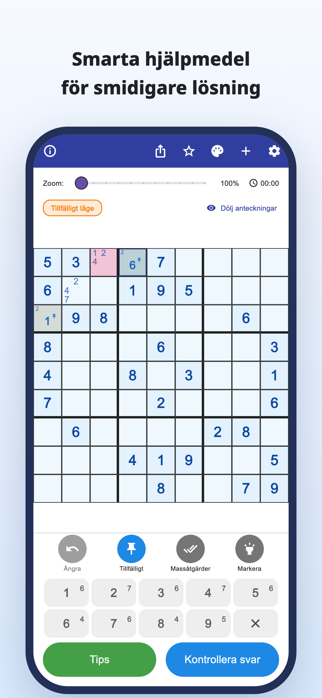
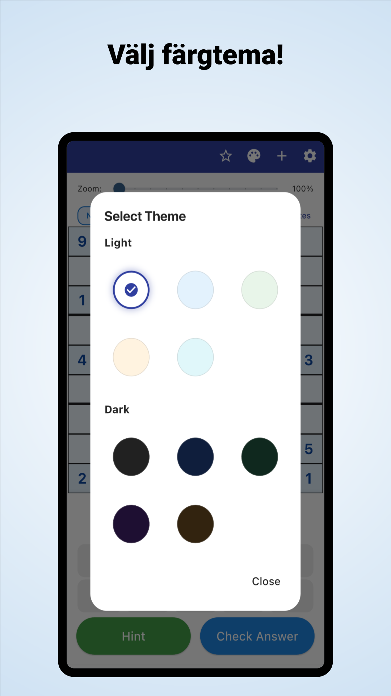

“Var ska jag titta nu?”
Du går igenom rutnätet om och om igen,
men fastnar på samma ställe.
Skanna med kameran · Tips med förklaringar
Skanna sudoku från tidningar och tidskrifter.
Förstå varför en siffra passar och fortsätt sedan själv.
iPhone och Android / Gratis nedladdning · Köp i appen





Känner du igen det här?
Du går igenom rutnätet om och om igen,
men fastnar på samma ställe.
Varför ska just den siffran stå där?
Att skriva av lösningen räcker inte.
Du vill ta papperssudokut du håller på med
och fortsätta i appen.
Gör ett hinder till en ledtråd
Läs in ett sudoku från en tidning eller tidskrift med ett foto och slipp mata in alla siffror för hand.
Läs in från en bildLäs resonemanget bakom ett drag och använd det för att hitta nästa steg, i stället för att bara fylla i svaret.
Tips med förklaringarUtforska förklaringar och övningar för varje teknik och träna på att känna igen dem själv.
Öva teknikerFör dig som gillar att hitta lösningen själv
Importera ditt vanliga pussel och fortsätt där du slutade.
Förstå det svåra stället och fortsätt sedan själv.
För nybörjare och alla som vill lära sig ännu en teknik.
Läs · Prova · Öva
Börja i webbläsaren.
Läs en guide eller spela ett helt pussel.
Från kandidatanteckningar till teknikförklaringar och övningar.
Prova ett helt pussel med tips när du behöver dem.
Upptäck reglerna och glädjen i att koppla ihop ledtrådar.
Titta på rutan med blå ram och öppna tipset.
Ledtråd till nästa drag
Kontrollera kandidaterna i en tom ruta.
Det här webbexemplet låter dig prova ett drag. Appens utseende skiljer sig.
När du fastnar i sudoku.
Ladda ner Sudoku Tips
Gratis nedladdning · Köp i appen
Appen kan laddas ner och provas gratis. Tips, svarkontroller och bildskanning har användningsgränser; vissa användningar kräver en videoannons.
Premium är en månads- eller årsprenumeration. Den tar bort annonser och ger obegränsade tips och svarkontroller. Bildskanning har fortfarande en gräns även med Premium. Priser och villkor finns i appen.
Importera ett foto av ditt sudoku. Kontrollera de tolkade siffrorna och rätta eventuella fel innan du börjar. Vanliga 9×9-sudokun stöds.
Du kan spela inbyggda pussel och använda förklaringar och teknikövningar. Vissa pussel och övningar kräver Premium.
Utöver den här demon av ett drag kan du spela ett helt pussel i webbläsaren och utforska guider och övningar.
Sudokuguide